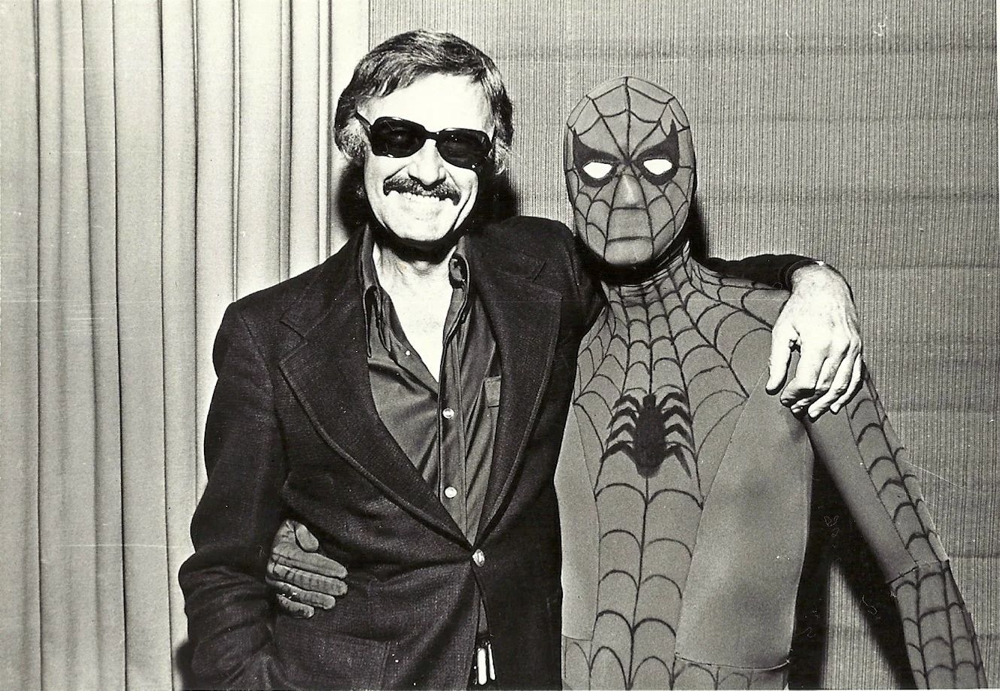
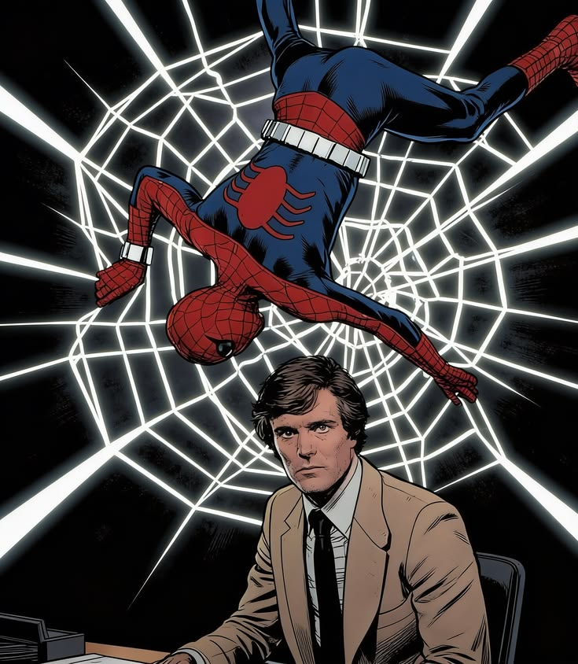
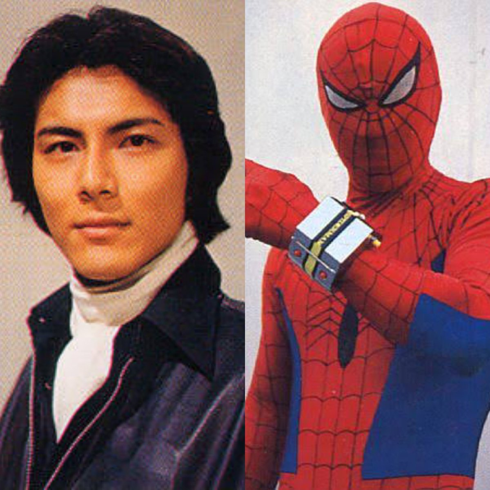
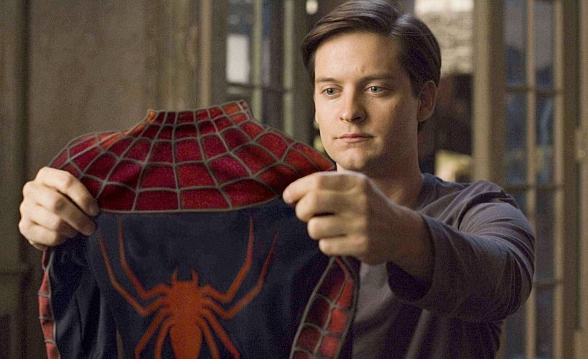
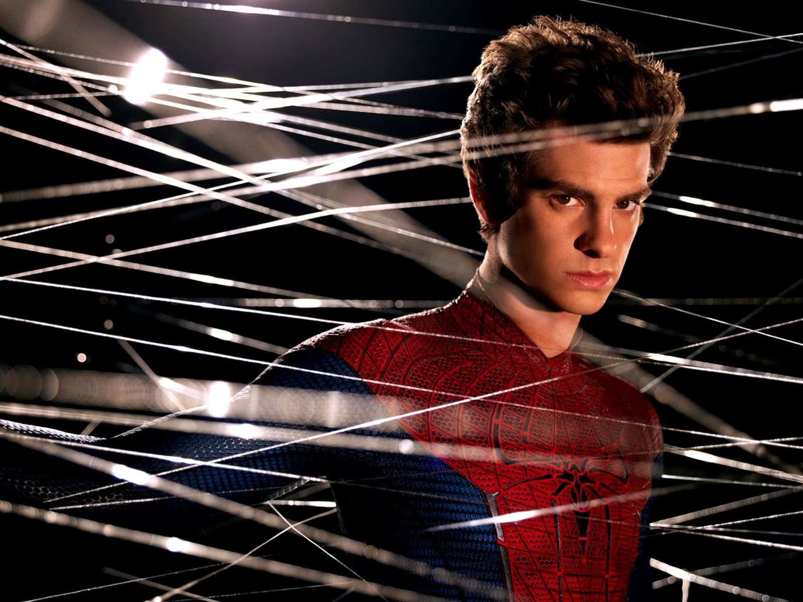
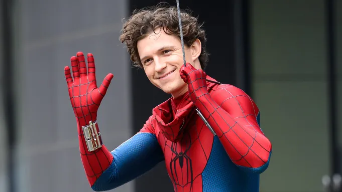

In the Spider-Man Multiverse, each Earth represents a different universe or reality. The Earth number is used to identify that particular universe and distinguish it from other Spider-Man realities.
For example, Earth-96283 represents the reality of Tobey Maguire's Spider-Man, while Earth-120703 represents Andrew Garfield's Spider-Man reality.

Danny Seagren played the first live-action version of Spider-Man in the “Spidey Super Stories” segments of the children’s television series The Electric Company, appearing from 1974 to 1977. Unlike later versions, this Spider-Man did not speak and communicated through gestures, narration, and comic-style speech bubbles. The segments were designed to help children develop reading skills while presenting the character in a fun and simple way. Although this version was very different from the Spider-Man seen in modern films, Danny Seagren’s portrayal is historically important as the first live-action appearance of Spider-Man on television.

Nicholas Hammond was the first actor to play Peter Parker in a full-length live-action Spider-Man production. He portrayed Spider-Man in the 1977 television film Spider-Man, which served as the pilot for the CBS series The Amazing Spider-Man. The series ran from 1977 to 1979 and featured Hammond as Peter Parker, a photographer who gains spider-like abilities and uses them to fight crime. His Spider-Man suit had a simple, old-style design with minimal special effects and a grounded look. Although the series was relatively short-lived, Hammond’s portrayal remains historically important as the first full-length live-action portrayal of Peter Parker.

Shinji Tōdō played Takuya Yamashiro, the Japanese version of Spider-Man, in the 1978 Japanese TV series Spider-Man, produced by Toei Company. Unlike Peter Parker, Takuya was a motorcycle racer who gained spider-like powers after meeting Garia, an alien from Planet Spider. The series ran for 41 episodes from 1978 to 1979. A unique feature was Leopardon, a giant transforming robot summoned by Spider-Man to fight monsters. This version combined Spider-Man with Japanese tokusatsu and giant-robot elements, making Tōdō’s portrayal one of the most unusual and memorable versions.

Tobey Maguire played Peter Parker in Sam Raimi’s Spider-Man trilogy, beginning with Spider-Man (2002). His version portrayed Peter as a shy and intelligent student who gains spider-like abilities after being bitten by a genetically engineered spider. Maguire returned in Spider-Man 2 (2004) and Spider-Man 3 (2007), facing villains such as Doctor Octopus, Green Goblin, and Sandman. His portrayal became one of the most popular and influential versions of Spider-Man, helping establish superhero films as a major part of modern cinema. His emotional performance became strongly associated with the character.

Andrew Garfield played Peter Parker in The Amazing Spider-Man (2012) and The Amazing Spider-Man 2 (2014), directed by Marc Webb. His Peter Parker was witty, intelligent, and emotionally expressive. After being bitten by a genetically modified spider, Peter gains superhuman abilities and uses them to protect New York City. Garfield’s Spider-Man was known for his fast movements, acrobatic fighting style, and humorous interactions with villains and civilians. His relationship with Gwen Stacy, played by Emma Stone, was central to the story. Despite ending after two films, Garfield’s emotional and distinctive portrayal remains highly appreciated by fans.

Tom Holland plays Peter Parker in the Marvel Cinematic Universe (MCU). He first appeared in Captain America: Civil War (2016), followed by Homecoming (2017), Far From Home (2019), and No Way Home (2021). His version of Peter Parker is a young, energetic, and humorous hero balancing school life with Spider-Man responsibilities. His version is closely connected to Tony Stark and the Avengers, blending humor, emotion, technology, and acrobatic action. He returns as Spider-Man in Brand New Day (2026), continuing as a full-time Spider-Man in a world that has forgotten him, facing a powerful new threat while dealing with changes in his abilities.